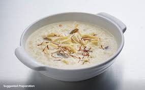

Kheer - Rice Pudding

Description
Kheer is a sweet Indian rice pudding flavored with cardamon, pistachios, and dried fruit. This easy recipe makes
4 bowls of this rich and creamy dessert — it's the best rice pudding I've ever had!
Ingredients
- 2 cups coconut milk
- 2 cups milk
- 3 tablespoons white sugar
- ½ cup basmati rice
- ¼ cup raisins
- ½ teaspoon ground cardamom
- ½ teaspoon rose water (Optional)
- ¼ cup sliced almonds, toasted
- ¼ cup chopped pistachio nuts
Steps
- Bring coconut milk, milk, and sugar to a boil in a large saucepan over medium heat. Add rice, reduce the
heat to low, and simmer until mixture thickens and rice is tender, about 20 minutes.
- Stir in raisins, cardamom, and rose water; cook for a few more minutes. Ladle into serving bowls and garnish
with almonds and pistachios.
Back to Home